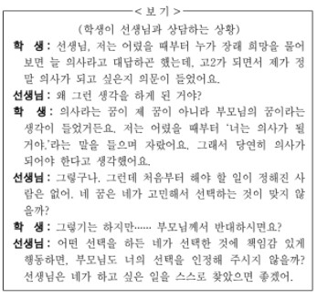

지문 보기(문제16~문제20)

20. 윗글을 바탕으로 <보기>를 이해한 내용으로 적절하지 않은 것은?
1. '학생'은 장래 희망과 관련하여 스스로를 대상화하고 있군.
2. 부모님의 기대를 의식하는 '학생'은 대타존재에 해당하겠군.
3. '선생님'은 선천적으로 주어진 본질이란 없다고 생각하고 있군.
4. 학생이 의사가 되기를 바라는 '부모님'은 대자존재에 해당하겠군.
5. '학생'은 장래 희망과 관련된 선택에서 타자의 시선을 고려하고있군.